A component's importance is not a property it carries alone. In a redundant circuit it becomes visible only relative to what has been removed — and that single shift is what CoAx measures, turning a blind spot into a signal.
Self-repair hides the components that matter
A behavior is localized to a circuit, and each component is scored by the effect of ablating it in isolation. That first-order weight is only meaningful if importance is additive. It stops being additive the moment a circuit is redundant.
Two wrong conclusions from one measurement
Remove a primary head and a dormant backup takes over. The output barely moves, so the primary reads as unimportant — the model quietly repaired the damage. And the backup was silent on the intact model, so it reads as unimportant too.
A single-ablation score therefore misreads both sides of the redundancy — and every tool built on it (attribution, knockout, pruning) inherits the error.
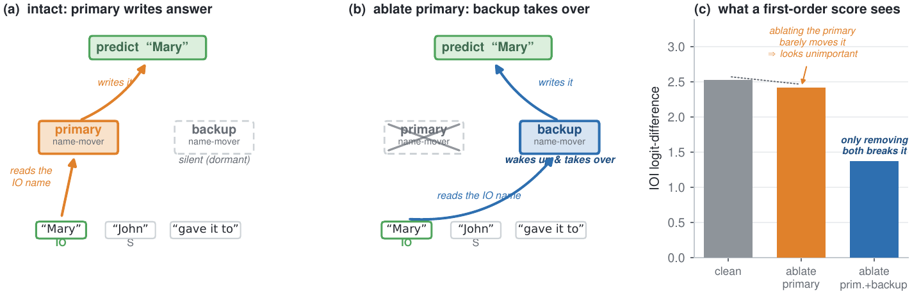
First-order scoring can't tell a dormant backup from a dead head — both are silent. So we change the question.
Ask what grows once the primary is gone
Instead of a unit's effect in isolation, CoAx measures its effect after a primary seed S has been ablated, in the output distribution's own (Fisher) metric. The score is the growth of that ablation energy under conditioning:
Blind-spot-proof
A dormant backup and a dead head look identical on the clean model. CoAx separates them: the backup's effect grows once its primary is gone; the dead head's does not.
Cheap & label-free
No gradients, no task labels — one clean pass, one seed-ablated pass, one pass per candidate: O(#heads) forwards.
A completion, not a rewrite
The seed can come from any first-order method; CoAx completes that circuit by returning the backups it hides.

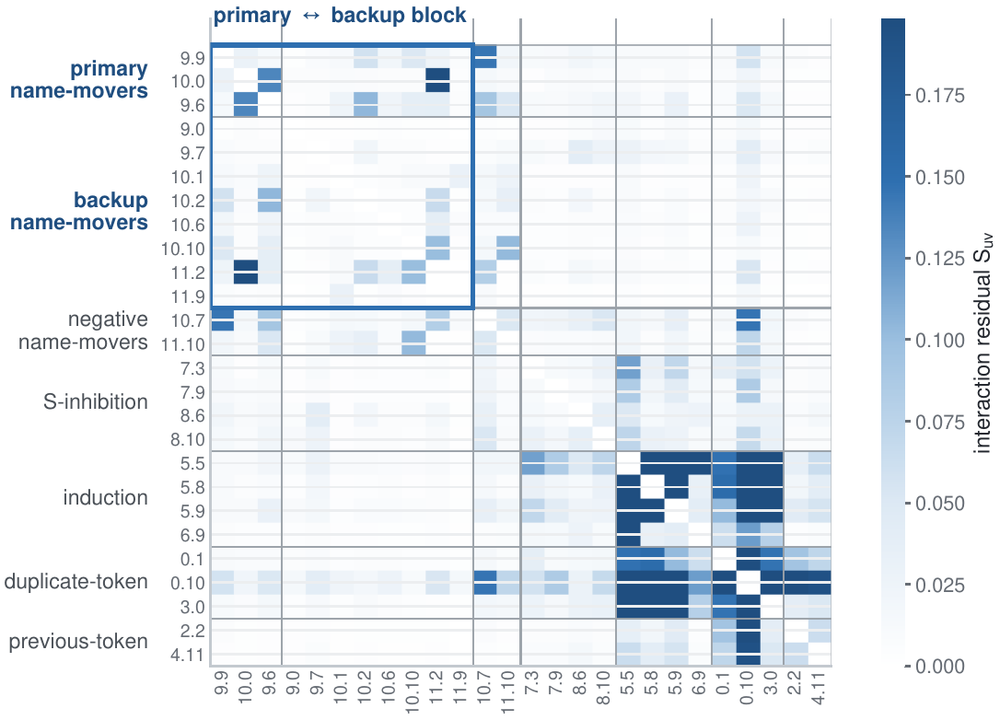
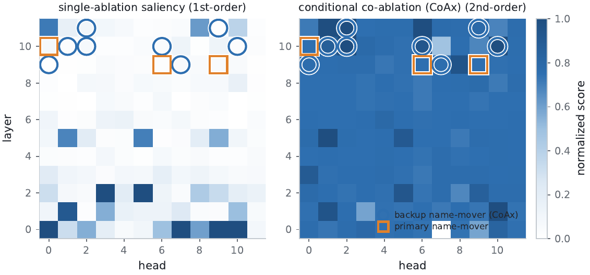
The structure is there in the second-order signal. Does conditioning actually surface the documented backups?
From the blind spot to the top of the ranking
On the GPT-2-small IOI circuit — the one with head-level backup ground truth — conditioning on the three name-mover primaries and ranking the other 141 heads by conditional growth recovers the eight documented backups that single-ablation saliency ranks below chance.
| score | backup ROC-AUC |
|---|---|
| single ablation 1st | 0.33 |
| attribution patching (AtP) 1st | 0.60 |
| EAP-IG 1st | 0.70 |
| AtP* GradDrop 1st | 0.82 |
| CoAx 2nd | 0.91 |
Every additive score falls short — including those built for self-repair. The gap is not a smarter gradient; it is the node-additive form, which a non-additive substitution cannot be expressed in. The plot at right is the same result, head by head.
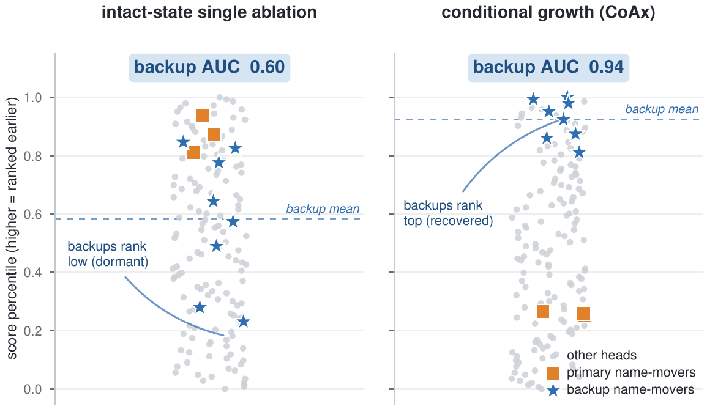
A high rank is necessary, not sufficient. Are the surfaced heads mechanistically backups?
They wake up — and the wake-up is causal
The recovered heads behave like backups on three independent, label-free signals, and a counterfactual patch closes the causal loop.

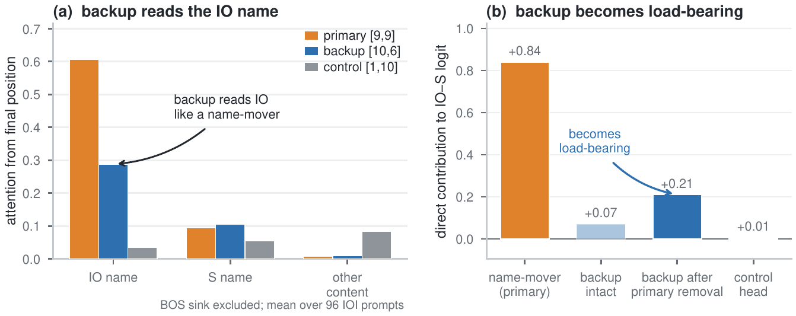
One head, four views
A single documented backup, [10,6], is silent on the clean model, yet at the prediction position it already reads the indirect-object name — the defining name-mover behavior.
Once the primaries are ablated it becomes load-bearing, and CoAx ranks it among the top backups. Invisible first-order, structurally a name-mover, causal only under conditioning.
The recovered circuit, three views — the primary write-path (orange) and the dormant backup route (blue) CoAx adds in parallel.
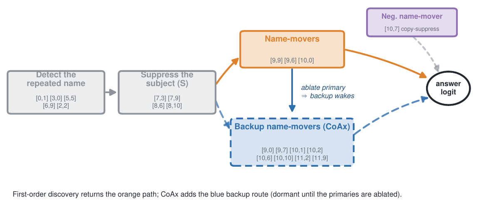
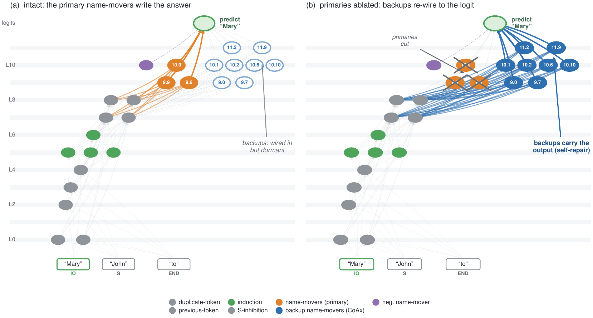
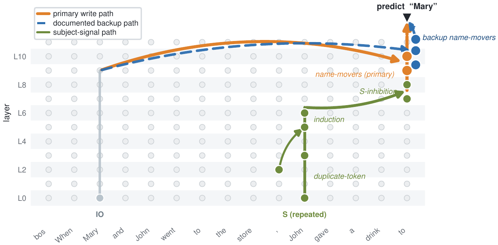
If they are load-bearing, they should change the tools that depend on them.
The blind spot corrupts the tools built on it — CoAx repairs them
Attribution, capability knockout, and structured pruning all rank components by the same node-additive score, so each inherits the same error wherever a circuit is redundant. Fed the recovered backups — one label-free pass — all three are repaired.
Attribution recovered
the effect self-repair masked (vs 0.22 from the primaries alone)
Knockout accuracy
matches the 0.72 documented-backup oracle; a first-order top-up overshoots
Pruned perplexity @50%
vs gradient-Taylor 201, from 124M to 7B
Capability knockout — a knockout needs the backups · click through the states
Repair-aware pruning · the removal order that keeps backups

One circuit, one model — does the phenomenon hold more broadly?
Label-free, across scale and architecture
The same label-free pipeline replicates the backup signature across the GPT-2 family and completes a second redundant circuit — induction — on eight further models spanning six architecture families.

Where it applies — and where it doesn't
CoAx wins on the output-movement circuits whose heads share aligned write directions. Its scope is honest: where redundancy is instead shared among co-firing heads, even input-side co-activation finds them and CoAx is complementary; and on the MLP-dominated greater-than circuit the head-level signal does not transfer — a property of the circuit, not the score.
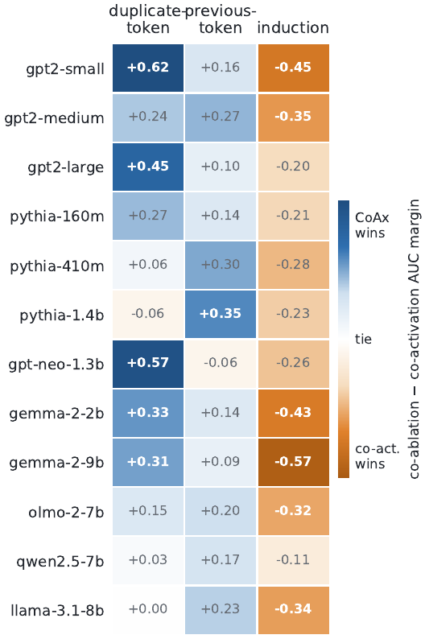
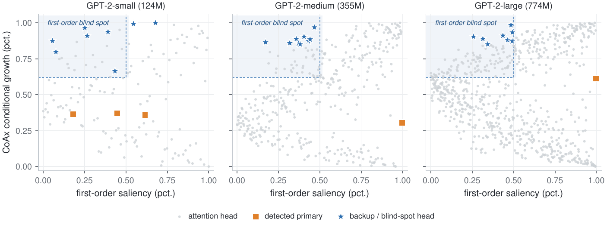
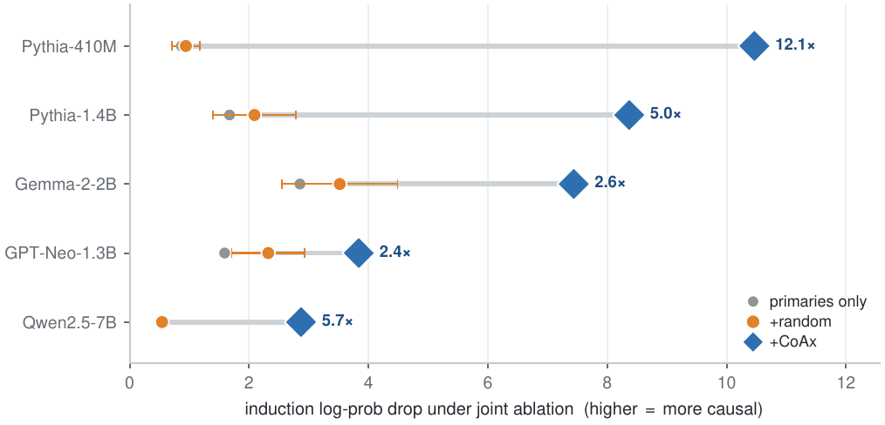
What makes the score work — and what it costs
Two design choices carry it — conditioning and centering — and the price is forward passes only: no gradients, no labels.
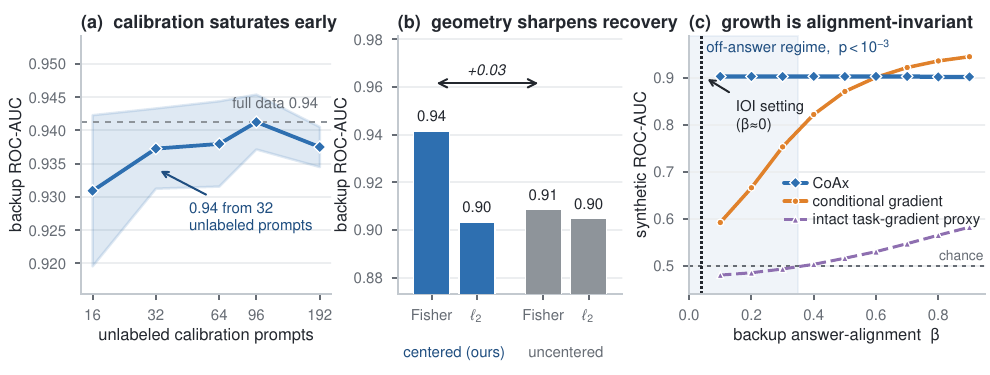
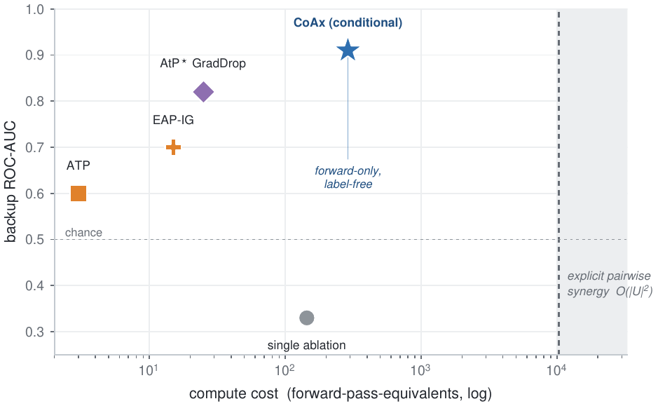
Paper, code, video, and citation
@inproceedings{gong2026coax,
title = {Conditional Co-Ablation: Recovering Self-Repair Backups in Transformer Circuits},
author = {Gong, Zhiren and Zeng, Zihao and Yuen, Chau and Lim, Wei Yang Bryan},
year = {2026},
note = {Project page: https://gongzhiren.github.io/Conditional-Co-Ablation-website}
}